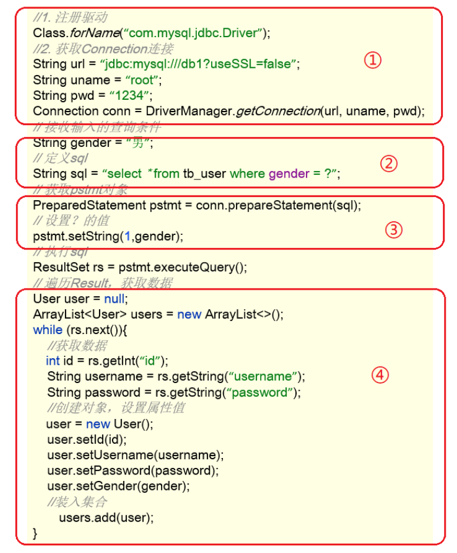
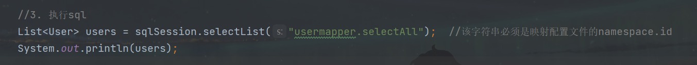
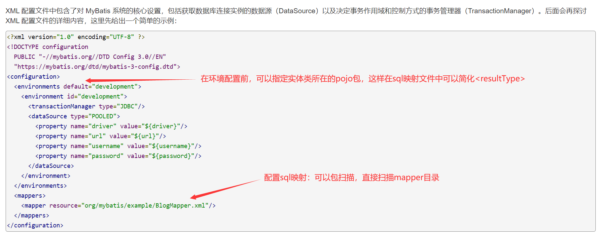

02_Mybatis
Mybatis是一款很重要的开发框架！
Mybatis
Mybatis概述
MyBatis 是一款优秀的持久层框架，用于简化 JDBC 开发。
持久层：负责将数据到保存到数据库的那一层代码。开发中我们会将操作数据库的Java代码作为持久层，而Mybatis就是对jdbc代码进行了封装。（JavaEE三层架构：表现层、业务层、持久层）
JDBC缺点
硬编码
注册驱动、获取连接
上图①的代码有很多字符串，而这些是连接数据库的四个基本信息，以后如果要将Mysql数据库换成其他的关系型数据库的话，这四个地方都需要修改，如果放在此处就意味着要修改我们的源代码。
SQL语句
上图②的代码。如果表结构发生变化，SQL语句就要进行更改，这也不方便后期的维护。
操作繁琐
手动设置参数
手动封装结果集
上图④的代码是对查询到的数据进行封装，而这部分代码是没有什么技术含量，而且特别耗费时间的。
Mybatis的优化
- 硬编码可以配置到配置文件
- 操作繁琐的地方mybatis都自动完成
Mybatis快速入门
1、在pom.xml中导入依赖坐标
至少需要：Mybatis、Mysql依赖
直接去找：https://mvnrepository.com/
2、编写Mybatis核心配置文件
在模块下的 resources 目录下创建mybatis的配置文件 mybatis-config.xml，内容如下：
1 |
|
3、编写sql映射文件（统一管理sql语句，解决硬编码问题）
在模块的 resources 目录下创建映射配置文件 UserMapper.xml，内容如下：
1 |
|
4、编码
在
pojo包下创建User的javaBean类。创建测试类，内容如下：
1
2
3
4
5
6
7
8
9
10
11
12
13
14
15
16public class MybatisDemo {
public static void main(String[] args) throws IOException {
//1. 加载mybatis的核心配置文件，获取 SqlSessionFactory
String resource = "mybatis-config.xml";
InputStream inputStream = Resources.getResourceAsStream(resource);
SqlSessionFactory sqlSessionFactory = new SqlSessionFactoryBuilder().build(inputStream);
//2. 获取sqlSession对象，用来执行sql语句
SqlSession sqlSession = sqlSessionFactory.openSession();
//3. 执行sql
List<User> users = sqlSession.selectList("usermapper.selectAll"); //该字符串必须是映射配置文件的namespace.id
System.out.println(users);
//4. 释放资源
sqlSession.close();
}
}
Mybatis的硬编码配置都可以在官方文档中找到：https://mybatis.org/mybatis-3/zh/getting-started.html
Mybatis代理开发
代理开发概述
之前使用Mybatis的时候也存在硬编码问题：

这里调用 selectList() 方法传递的参数是映射配置文件中的 namespace.id值。这样写也不便于后期的维护。如果使用 Mapper 代理方式则不存在硬编码问题：
通过上面的描述可以看出 Mapper 代理方式的目的：
- 解决原生方式中的硬编码
- 简化后期执行SQL
使用Mapper代理开发
- 定义与SQL映射文件同名的Mapper接口，并且将Mapper接口和SQL映射文件放置在同一目录下
- 设置SQL映射文件的namespace属性为Mapper接口全限定名
1 | <mapper namespace="com.Lijiacheng.mapper.UserMapper"> |
- 在 Mapper 接口中定义方法，方法名就是SQL映射文件中sql语句的id，并保持参数类型和返回值类型一致
在接口声明相应函数后，点击左侧mapper小图标可以跳转到xml映射文件相应id的sql语句上。
- 测试类中内容：
1 | public class MybatisDemo_Mapper { |
另外，使用Mapper代理的方法，在
mapper接口和sql映射文件同名的前提下，可以在mybatis核心配置文件中通过包扫描的方式简化sql映射文件的加载。
1 | <mappers> |
核心配置文件
类型别名
在sql映射配置文件中的 resultType 属性需要配置数据封装的类型（类的全限定名）。而每次这样写是特别麻烦的，Mybatis 提供了 类型别名(typeAliases) 可以简化这部分的书写。
首先需要现在核心配置文件中配置类型别名，也就意味着给pojo包下所有的类起了别名（别名就是类名），不区分大小写。内容如下：
1 | <typeAliases> |
通过上述的配置，我们就可以简化映射配置文件中 resultType 属性值的编写：
1 | <mapper namespace="com.itheima.mapper.UserMapper"> |
小结
最后我们总结一下Mybatis进行代理开发的流程：
1、首先和入门的开发流程相同，需要进行核心配置文件的配置、以及在resource目录下创建sql映射文件。
核心配置文件可以从mybatis官网上直接copy：https://mybatis.org/mybatis-3/zh/（我居然在谷歌搜索引擎上找不到，这里记录一下）
配置文件需要注意的两个点，如下图：

配置类型别名，简化sql映射文件
1
2
3<typeAliases>
<package name="com.Lijiacheng.pojo"/>
</typeAliases>加载sql映射配置时进行包扫描（特别是在以后开发中有多个sql映射文件时）
1
2
3
4<mappers>
<!--Mapper代理方式-->
<package name="com.Lijiacheng.mapper"/>
</mappers>
sql映射文件需要注意的几个点：

namespace属性对应的是mapper目录下的mapper接口id属性对应的是接口中声明的方法，这里的id属性要和接口方法名一致！resultType属性可以直接使用别名，习惯上直接用实体类名即可（前提要配置类型别名）
2、在mapper目录下创建和sql映射文件同名的mapper接口，声明方法
3、实体类一定要有啊，这个不用说了
4、测试类前面也是一样的，唯一不同的就是需要获取一个接口代理对象：
1 | UserMapper usermapper = sqlSession.getMapper(UserMapper.class); |
通过这个对象可以调用接口中声明的函数，接口中的函数和sql映射文件中的id值相同，这样就找到了需要执行的sql语句，这样就可以操作数据库了，并通过你调用的函数返回结果。
还有一个比较重要的点：
当你Bean类中的成员变量和操作数据库的数据名不同时，如何产生映射关系。这个放在后面的帖子里记录会比较容易懂。